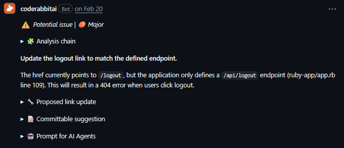
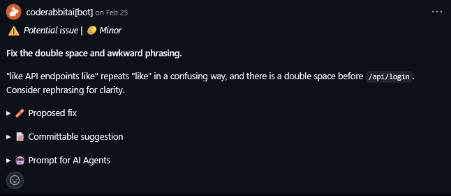

Mandatory 2 - ripmarkus
Kristian, Valdemar, Niko & Mathias
This mandatory hand-in documents how we worked with version control, delivery workflows, software quality, DevOps practices, and monitoring during the project.
Unlike the first hand-in, this document is not primarily about describing the application itself. Instead, it focuses on how we worked as a team: how changes moved from issues to branches, how pull requests were reviewed, how CI supported our workflow, and where our process worked well or broke down.
The documentation reflects the state of the project on 06/06/2026. Refer to the repository documentation for the latest updates.
Use the links below to navigate to the relevant section.
How We Use Version Control
How Are We DevOps?
Software Quality
Monitoring Realization
How we use Version Control
Branching Strategy
In this project, we have used the main branch as our production-ready branch. All changes have been made in separate branches, such as feat/, documentation/, and chore/, which are then merged through pull requests.
Overall, this strategy has worked well for us, especially because it made deployment easy and fast. In total, we have had 475 commits, 126 closed pull requests, and as of now, 2 open pull requests.
Issue Based Workflow
Another way we have structured the delivery of functionality is by creating an issue whenever something needs to be done. A branch is then created from that issue, and the task is solved there. Whenever changes are pushed to a separate branch, a pull request is created against main.
Pull Requests
When creating a pull request, the author has to answer a few questions:
- What has changed?
- Why did it need to be changed?
- How was it changed?
The pull request also includes a small checklist:
- Does the application compile?
- Has documentation been added?
We have done it this way to ensure that changes are sincere and, at the very least, well thought through.
CI
When a pull request is created, a GitHub Actions workflow runs, namely CI.yaml. This workflow boots up a GitHub runner using Ubuntu as the operating system. PostgreSQL is then started, Ruby is set up, RSpec tests are run, a Docker image is built, and the containers are started while health checks are performed.
However, the Docker image is not pushed. We have chosen to do it this way to make our main branch even more secure.
Inconsistencies and Reflection
Another important part of our workflow is that whenever a pull request is created, another person has to review it. This forces us to do code reviews and also helps share knowledge across the team.
If the pull request is approved and the CI.yaml checks succeed, the branch is then eligible to be merged into main.
That being said, we are not claiming that our project or workflow has been perfect. We have failed a few times.
For example, our naming conventions for branches have not always been upheld. This might seem like a small thing, but we think it shows that conventions are not always respected as much as they should be.
Another example is our rule about deleting branches after they have been merged. We try to do this consistently, and most of the time we have done so, but at times pull requests have piled up a little.
As of now, we have two open pull requests that will be reviewed after this assignment and hopefully approved.
How are you DevOps?
DevOps is not a checklist, it is a culture that emerges from continuous, full-time collaboration over time. A 10 ECTS course represents roughly 275 hours of total student work, spread across a semester, split between multiple people, and competing with other obligations. The practices described below are real, but they exist in a context that is structurally incompatible with what DevOps actually demands. What follows is an honest reflection on how close we got, and where the constraints showed.
With that said, the following tries to answer the question on its own terms. We use CALMS as a framework to argue why we are DevOps, and where we fall short.
Culture
No one merges their own PR. We require peer review, and we have CodeRabbit set up as an extra reviewer on every PR. The idea is that the codebase belongs to the team, not whoever wrote a given feature. In practice though, reviews are not always serious. Sometimes a PR gets approved to unblock someone rather than because it was actually reviewed. We also started with commit message conventions but stopped following them, which makes the history harder to read.
Automation
We have tried to automate each critical part of our development cycle: Tests run on every PR, the image gets built and validated, and a passing CI on main triggers a deployment. The server pulls the new image, backs up the database, and restarts the container without anyone needing to SSH in.
The gap is on the local side: development runs through Docker, which means rebuilding the image for every change. It is slow, we knew it was slow, and we never fixed it. That makes developers less likely to test things locally before pushing.
Lean
Looking at the git history, we are not very lean. The CD pipeline needed four separate fix PRs. Tailwind broke and was fixed in two rounds. There are sequences of PRs from the same branch merged minutes apart, meaning we merged something, saw it was wrong, and pushed another fix immediately.
The pattern is the same each time, we merge something before it is fully verified and let production surface the problem.
Measurement
Although we have set up Postman monitoring and Grafana monitoring, our measurements are not very critical to the business development, we are solely monitoring the parts about how many users log in, if they CAN log in and not what they search for, or what part of the site they actually spend the most time on.
We collect data, but we do not really observe. Measurement is raw numbers, observation is understanding what they mean. We have the former and not the latter, and that gap is where useful insight about user behaviour would live.
Observability could mean a lot more than server health, understanding user patterns and behaviour would actually tell us something useful about our product.
Sharing
All infrastructure is in the repo as code, and anyone can reproduce the full environment from it. The documentation site publishes automatically on every push to main. Where it falls down is that documentation gets written after the fact, not during.
We have a vast amount of documentation, served as a deployment on Github Pages, meaning that everyone can at any given time read well formatted documentation on the application and team.
We built real habits around shared ownership, transparency, and continuous delivery, but the gaps are mostly cultural and not technical. Reviews that approve without reading, fixes pushed to production to verify, metrics that confirm the system is alive but say nothing about whether it is useful. We have learnt that DevOps is a direction and that it takes time to align with the tracks properly.
Software Quality
In our project we used RuboCop and CodeRabbit as software quality tools.
RuboCop was mainly used to keep a consistent code style and highlight issues such as high complexity, long methods, or unclear structure. It helped us quickly see where the code might become harder to maintain.
CodeRabbit was used in pull requests to give automated code reviews. It helped the team spot potential issues like logic mistakes, missing edge cases, and general improvements. It also made PR reviews a bit easier since we had something to start from.
Do you agree with the findings?
Mostly yes, but not everything.
We agree with findings that point to real issues, like complexity or bad structure. Those are things we’ve also noticed ourselves and are currently working on (like splitting things into smaller parts). This is something we are actively improving by restructuring the code into smaller and more focused parts.
But some of the comments feel a bit unnecessary, especially smaller style things or suggestions that don’t really fit how our project is built.
Which ones did you fix?
We focused on fixing the issues that had a real impact on the system.
For example, CodeRabbit pointed out that our logout link was incorrect. The frontend was pointing to /logout, while the backend endpoint was actually /api/logout.
This would have caused a 404 error when users tried to log out, so we fixed it by updating the link to match the correct endpoint. This is a good example of how the tool helped catch an issue that directly affects the user experience.

Which ones did you ignore?
We also ignored some minor suggestions from CodeRabbit that were related to wording and formatting.
For example, CodeRabbit suggested fixing a double space and slightly awkward phrasing in a comment/text. While the suggestion was valid, it did not affect functionality or maintainability, so we chose not to prioritize it.

Why?
We prioritized issues that affect functionality and user experience.
The logout example is a good case where the tool caught a real bug that we might not have noticed immediately. In this case, the suggestion was clearly useful and worth fixing, since it would otherwise lead to a broken feature.
At the same time, we chose to ignore smaller or less relevant suggestions, since not everything the tools point out has the same impact. Some issues are more about style or wording, and those were not as important compared to fixing actual problems in the system.
Overall, we used the tools as guidance, not as the source of truth.
Monitoring Realization
Setup and early issues
One of the main things we found out was, that monitoring is only useful when it's actually configured properly. In the beginning we got a lot of errors, which in reality were not "real" errors. For example we set up our response time to be way too low, so the requests appeared as errors, even though it was just because the server could not answer fast enough. We also had endpoints where we expected JSON, even though it actually returned HTML, which made it all look a whole lot more unstable, than it was in reality, therefore it was a bit harder to rely on at the start.
System failures and downtime
We did actually catch a very big error partly through our monitoring. We had in the past set up a cronjob in our pipeline which ran every third day. But because our pipeline setup had changed since, the cronjob now ran with the outdated setup and caused a lot of server downtime. Which we did not notice under development, but the monitoring showed these unexplained downtimes and helped us realize the cronjob was at fault. We ended up removing the whole cronjob out of spite.
We also adjusted some of our tests along the way, we once had an endpoint which should monitor for error handling, but the monitor reported it as an error when it received a code 400. Which was the correct response and it seems obvious now, but something that slipped our mind back then, because the logic is effectively reversed compared to the other endpoints.
Conclusion
So to conclude this realization, we found that monitoring does not just mean testing for errors, but actually define what the correct behaviour should be. After we adjusted our thresholds and tests, the monitoring became much more useful and gave os a greater view of our system.